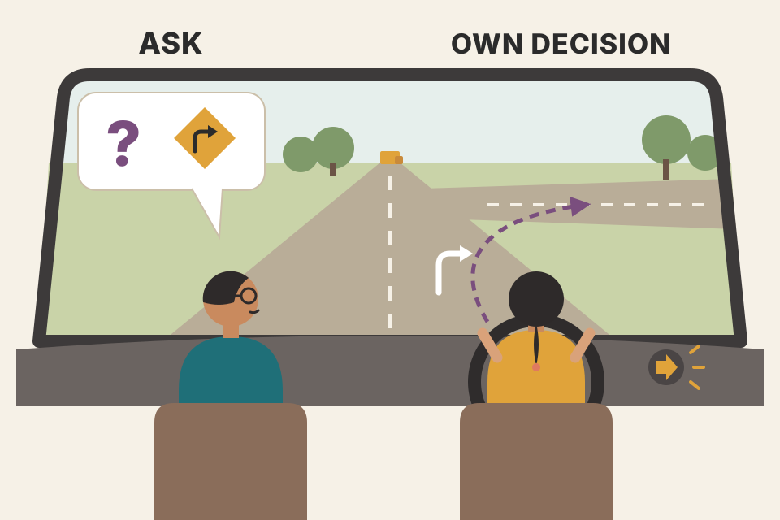
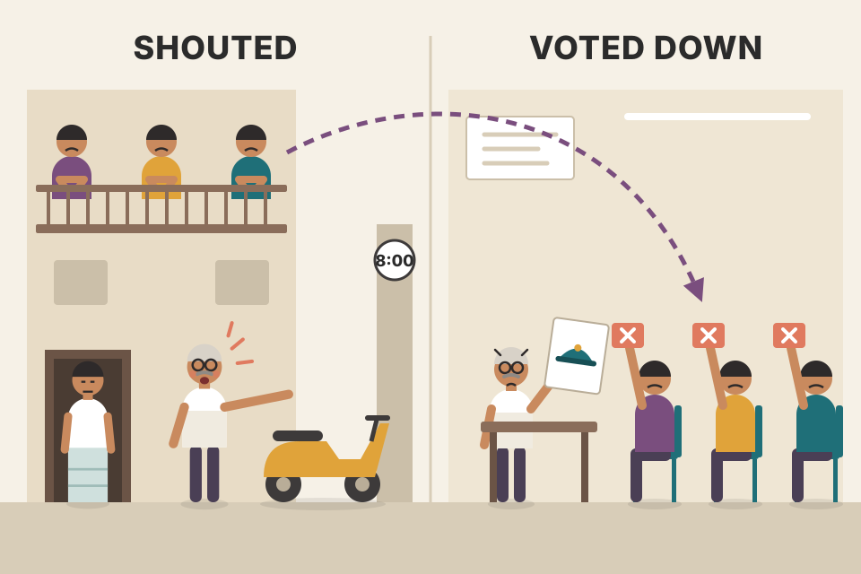
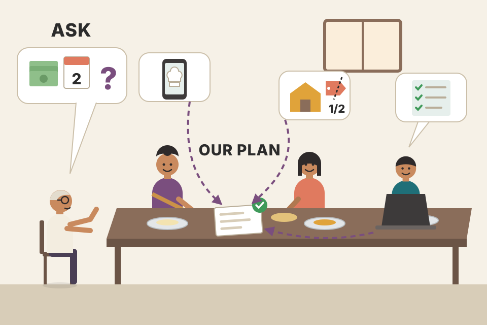
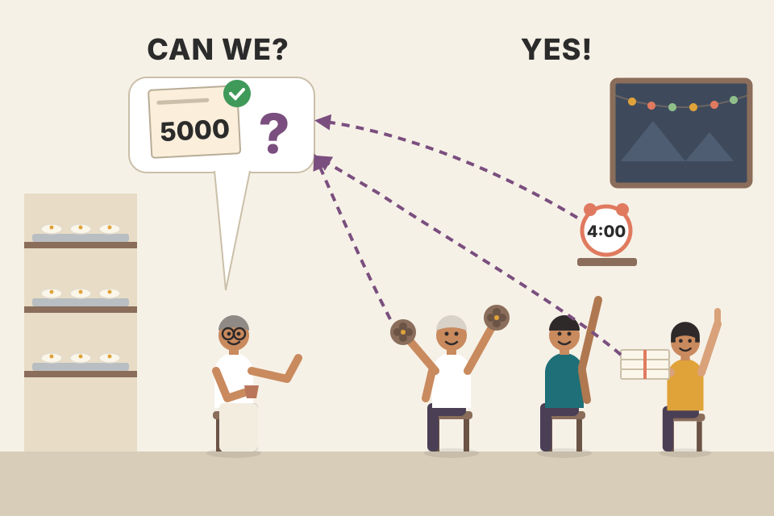
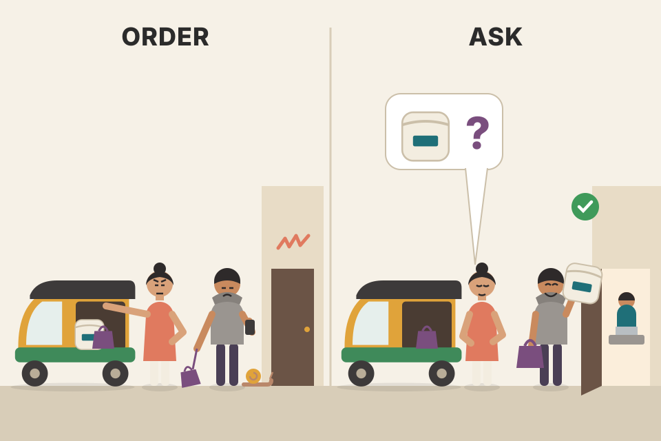

DALE CARNEGIE · HOW TO WIN FRIENDS · PART FOUR · CHAPTER 4 · PDF p213–215
No One Likes to Take Orders
Turn the order into a question. People will do the same work, often better, and they will not hold it against you.
This is one of the shortest chapters in the book: three pages, three stories, one rule. A man who shared an office with the business leader Owen D. Young for three years never once heard him give a direct order; Young suggested, asked and let people try. A shop instructor at a vocational school bellowed an order at a student who had parked badly, and the whole class made his life hard from that day on. A factory manager in Johannesburg faced an impossible delivery date, and instead of pushing his workers harder he asked them how it could be done; they found the way and the order shipped on time. The lesson Carnegie draws is that a question gets the same result as a command while saving the other person's pride, drawing out their ideas, and making the decision theirs.
Principle 4 of Part Four
Ask questions instead of giving direct orders.
How the chapter fits together
pdf p213–215 · read this first
Where it sits. This is the fourth chapter of Part Four, "Be a Leader: How to Change People Without Giving Offense or Arousing Resentment". Part Four is about the moment a leader (a manager, a parent, a tech lead, an older sibling) needs someone to do something differently. Its first three chapters dealt with how to open a correction: begin with honest praise (Ch.1), point at mistakes indirectly (Ch.2), and talk about your own mistakes first (Ch.3). This chapter is about how to word the request itself. The next one, Let the Other Person Save Face, widens the same idea: protect the other person's pride even when the news is bad.
The argument as a chain. Each row reacts to the one before it.
Problema direct order→hurts pride, invites pushback
ModelOwen D. Young (via Ida Tarbell)→suggestions, never orders
Whyeasy to fix errorspride savedfeels important→cooperation, not rebellion
WarningSantarelli's shop instructor→brash order, even a justified one→whole class resents him
Bonusquestions spark ideaspeople back decisions they shaped
ProofIan Macdonald, Johannesburg→three questions to the shop floor→impossible order delivered on time
RulePrinciple 4: ask questions instead of giving direct orders
Limitsthe goal still gets met→change the form of the request, not whether you make it
The chapter has no sub-headings. The plates below follow its order, one per story or idea.
01 · THE MODEL
Owen D. Young: three years in one office, not a single direct order
pdf p213
Carnegie opens with a story he heard second-hand, over dinner, from a famous writer.
told by Ida Tarbellabout Owen D. Youngwitness: 3 years in his officeorders heard: zero
The source. Carnegie once dined with Ida Tarbell, whom he calls the leading American biographer of her day. When he mentioned he was writing a book on getting along with people, she told him about research she had done for her biography of Owen D. Young. One of the people she interviewed had shared an office with Young for three years.
What the man noticed. In all that time he never heard Young give anyone a direct order. Young did not say "do this" or "don't do that". Instead his requests came in four shapes:
An invitation to think about something: he would suggest that a person might want to consider an idea, leaving the choice with them.
A question about whether it would work: he put his own idea up for the other person to judge.
A request for their opinion on his own work: after dictating a letter, he often asked the listener what they thought of it. The boss was asking the staff to review him.
A softer alternative instead of a correction: when he read a letter an assistant had drafted, he did not mark it wrong; he offered that it might read better if phrased a different way.
"Do you think that would work?"One of Young's habitual questions, as reported to Tarbell and retold by Carnegie (pdf p213)
The deeper habit. Young did not just word orders politely. He handed the work over. He gave people the chance to do things themselves, let them actually do them, and let them learn from their own mistakes rather than steering every step.
Beyond the book: who these two were
Ida Tarbell (1857–1944) is best remembered as an investigative journalist; her series on John D. Rockefeller's Standard Oil (published as a book in 1904) helped lead to the company's break-up. She also wrote popular biographies of Lincoln and, in 1932, of Owen D. Young.
Owen D. Young (1874–1962) was a lawyer who became chairman of General Electric, founded the Radio Corporation of America (RCA) in 1919, and chaired the 1929 committee behind the "Young Plan" for German war reparations. He was Time magazine's Man of the Year for 1929. In other words, this was one of the most powerful executives in America, someone who could easily have given orders and been obeyed.
Picture it

A good driving instructor in a Maruti 800 on a quiet Sunday road does not bark "brake, now, indicate, turn". She asks, "What do you see coming up ahead?" and "Which lane do you want for that turn?" The learner brakes, indicates and turns by their own decision, and at the next junction they do it without being asked. The instructor who shouts every move gets a learner who can only drive with her in the seat.
Where it breaks: the instructor has a dual brake pedal and will stamp on it if a lorry appears. Most leaders have no such safety net, and in a true emergency (see "Where it can go wrong") a short direct instruction is still the right call.
At work
Young's four shapes map neatly onto a tech lead's week. In a design review: "Have you thought about putting a queue in front of this?" instead of "Add a queue." In a planning meeting: "Would a two-step rollout work here?" instead of "We're doing a two-step rollout." On your own RFC: "Tear this apart, what am I missing?" In a code review: "Might this read more clearly as two smaller functions?" instead of "Split this function."
The last part of the story matters as much as the wording: Young let people do the work and learn from their mistakes. For a lead, that means not rewriting a junior's PR yourself, and accepting that their version may take a wrong turn you could have prevented, as long as the cost of that wrong turn is small.
Interview angle. "How do you influence people who don't report to you?" is answered almost entirely by this plate. Engineers on another team owe you nothing; an order from you is just noise. A question that lets them judge your idea ("would this break anything on your side?") is how cross-team work actually moves.
Why a suggestion beats an order: five claims in one paragraph
pdf p213
Right after the Young story, Carnegie packs his whole explanation into a few lines. Unpacked, it makes five separate claims:
1. Mistakes get easier to fix
A suggestion leaves room for "good point, let me change that". An order turns the same change into a public loss, so people dig in. Young's assistants could fix a letter without anyone having been "wrong".
2. Pride survives
Nobody has been told off. The person who changes course does so by their own choice, so there is nothing to feel ashamed of.
3. They feel important
Being asked means your judgement counts. This is the "desire to be important" from Part One, fed by the way a request is worded.
4. Cooperation, not rebellion
An order invites the quiet urge to resist, delay or do the minimum. A question invites people to join in.
5. A brash order leaves a long grudge
The resentment from a harsh command can last a long time, even when the order was correcting something that really was wrong. Being right does not protect you. The next story proves it.
What's happening behind it
The book's explanation: an order says "I decide, you obey", which lowers the other person; a question says "you decide", which raises them. Pride and the wish to feel important (the theme of Ch.2) decide how people react, not the content of the request.
Beyond the book: psychologists have a name for the urge to resist an order: reactance (Jack Brehm, 1966). When people feel their freedom to choose is being taken away, they push back to win it back, sometimes by doing the opposite of what was asked. Research on self-determination theory (Edward Deci and Richard Ryan) adds that people work harder and more creatively when they feel they chose the task (autonomy) than when they feel controlled, even if the task is identical. A well-made question keeps the feeling of choice while still pointing at the goal.
Worked example: the same request, two ways
Order
"Move the cron job off the API servers by Friday."
Likely result: it gets moved, maybe. If the engineer had a reason it lives there, you never hear it. If Friday is unrealistic, you hear about it on Friday.
Question
"The cron job seems to spike CPU on the API boxes at midnight. Could we move it to a worker? Is Friday doable, or is there something I'm not seeing?"
Same goal, same deadline on the table. Now the engineer can say "yes", "yes but Tuesday", or "it's there because of X", and each answer is useful.
Fixing errors without anyone losing face: Part Four, Ch.5 (next chapter).
03 · THE WARNING STORY
The car in the driveway: a correct order that turned a whole class against a teacher
pdf p213–214
Carnegie's fifth claim (a brash order breeds a long grudge, even when it is justified) gets its proof from a story told in one of his classes.
Dan Santarellivocational school teacherWyoming, Pennsylvaniaone bad parking job
The situation. A student had parked his car illegally, right across the entrance to one of the school's workshops, so nothing could get in or out.
The move. Another instructor (not Santarelli; he was the one who told the story) charged into a classroom and demanded, in a superior tone, to know whose car was blocking the way. When the owner spoke up, the instructor shouted at him to move it immediately, and threatened that otherwise he would put a chain round the car and haul it out himself.
What happened. The student was in the wrong; Carnegie says so plainly. The car should not have been there. But from that day the student resented the instructor, and so did everyone else in the class. They all went out of their way to make his job difficult and unpleasant.
The better way, as Carnegie describes it. Ask in a friendly tone whose car is in the driveway. Then suggest that if it were moved, other cars could get in and out. The student would have moved it gladly, and neither he nor his classmates would have been left angry.
Step through it: one order, two endings
Notice the scale of the damage. The instructor got exactly what he wanted in the moment: the car was moved. What he paid for it was the goodwill of a whole room of students who had not done anything wrong, from that day on. They were not defending the bad parking; they were reacting to how a classmate had been treated in front of them.
Picture it

A housing-society secretary finds a scooter blocking the gate. He bangs on the owner's door at 8 a.m. and shouts, in front of the neighbours, that he will have it towed. The scooter moves. At the next society meeting, though, every proposal he makes (a new watchman, a maintenance hike) gets voted down by people who were standing on their balconies that morning. Had he knocked and said, "Is this yours? The milk van can't get in," it would have moved just as fast and cost him nothing.
Where it breaks: neighbours can vote against the secretary; students cannot vote out a teacher, so their revenge was quieter (making his job unpleasant). In both cases, the onlookers paid back the insult, not the person who was corrected.
What's happening behind it
The book's explanation: the order was right, but the manner (arrogant, shouted, threatening, public) attacked the student's pride. Pride wounded in public turns into resentment, and resentment outlasts the original problem.
Beyond the book: the classmates' reaction is a known effect. People who watch someone being treated with disrespect lose trust in the person who did it, even when the target was at fault. Christine Porath's research on workplace incivility finds that witnesses of rude treatment help less and perform worse afterwards. A public dressing-down is always a message to the audience too.
At work
The engineering version is the #general channel message: "Whoever pushed directly to main, revert it NOW." Someone did break the rule, and the revert is needed. But fifty people read that message, and what they learn is that mistakes here get you shouted at in public. The next time they break something, they will be slower to admit it.
A friendlier version gets the same revert faster: a direct message to the author, or in the channel, "Looks like a commit landed on main without review and the build is red. Whoever has it, could you revert or ping me and I'll help?" The problem is named; nobody is threatened.
Interview angle. "Tell me about a time you had to enforce a process." Interviewers listen for whether you got compliance and kept the team with you. A story where you explained the reason, asked first, and the rule stuck is stronger than one where you laid down the law and were right.
Worked example: the driveway, rewritten for an office
Brash order
"Whose laptop bag is this on the meeting-room table? Get it out of here now, or it goes in the lost-and-found bin."
Friendly question + reason
"Is this anyone's bag? The client is coming in at ten, so we'll need the table clear. Thanks!"
Same request, same speed. The second gives the reason (the client), as the better way in the book gives one (other cars need to get through).
Connects to
Why public criticism creates resentment that lasts: Part One, Ch.1.
Questions do more than soften an order: they spark ideas and create buy-in
pdf p214
Up to here, the case for questions has been defensive: they avoid hurt pride and grudges. Carnegie now adds two positive benefits.
Questions spark creativity
Asking makes an instruction easier to swallow, and it often brings out the other person's own ideas. An order has one possible answer (yes); a question has many, and some of them may be better than yours.
People back what they helped decide
Someone is far more likely to accept an instruction if they had a part in the decision behind it. By the time the "order" arrives, it is partly their own.
Picture it

A joint family is planning a cousin's wedding. If the eldest uncle simply announces the venue, the menu and the guest list, everyone does their bit, and grumbles about it for years. If he asks at Sunday lunch, "We have about fifteen lakh and two months; how should we do this?", the aunt who knows a caterer, the cousin who can get a hall discount and the nephew who will build the RSVP sheet all speak up. The plan that comes out is better than his, and nobody complains about it because they made it.
Where it breaks: a big family discussion can go round in circles for weeks. Carnegie's questions work because a leader frames them around a clear goal and still makes the final call; they are not a vote on everything.
What's happening behind it
The book's explanation: having a say in a decision makes it partly yours, and people do not resist their own decisions.
Beyond the book: a classic study by Lester Coch and John French (1948) at a pyjama factory in Virginia compared groups of workers facing the same change in their jobs. Groups who took part in designing the change recovered their output faster and had far fewer resignations than the group that was simply told. Later work on the IKEA effect (Michael Norton, Daniel Mochon, Dan Ariely, 2012) found that people value things more when they helped build them; plans seem to work the same way.
At work
The best example in engineering is estimation. A manager who says "this ships in two weeks" gets a team that privately thinks it is impossible and is not surprised when it slips. A manager who asks "what would it take to ship in two weeks, and what would we cut?" gets a plan the team believes in, plus ideas (drop the admin screen, reuse the old export) the manager would never have thought of.
Interview angle. "Tell me about a time your team had to hit a tough deadline." A strong answer shows you shared the constraint honestly, asked the team for options, and the solution came from them. It signals that you lead by drawing out ideas, not by pushing harder. The next plate is the book's version of exactly this answer.
Connects to
Letting the other person feel the idea is theirs: Part Three, Ch.7.
Ian Macdonald's impossible order: three questions instead of a push
pdf p214
Ian MacdonaldJohannesburg, South Africageneral manager, small plantprecision machine partsdelivered on time
The situation. Macdonald ran a small factory making precision machine parts. A customer offered a very large order, but the shop already had a full schedule and the customer wanted the parts in a very short time. Macdonald was convinced the plant could not meet the delivery date. On paper, taking the order looked impossible.
What he did not do. He did not accept the order and then lean on his people to work faster and rush it through. That is the "direct order" path: the boss decides, the shop floor suffers.
What he did. He gathered everyone together and laid out the situation honestly. He explained what the order would mean for the company and for them personally if they could find a way to deliver it on time. Then he asked questions, three of them in substance:
Is there anything we can do to take this order on?
Can anyone think of a different way to route the work through the shop that would make it possible?
Could we change our working hours or who does which job to make it fit?
What happened. The workers came up with plenty of ideas, and then they insisted that he accept the order. They tackled it with a can-do spirit, and the order was taken, made and delivered on time.
"We can do it."The attitude Carnegie says Macdonald's workers brought to the order (pdf p214)
Why the story is clever. Look at who ended up pushing for the order. Macdonald thought it was impossible; his workers talked him into it. Because the plan was theirs, the extra effort was something they had volunteered, not something forced on them. Notice too the order of his moves: honest situation first, then why it matters to them (not just to the company), then open questions.
Reflect, then reveal: your version of Macdonald's meeting
Your team has a full sprint. Sales has a big prospect who will sign only if a single sign-on integration ships in three weeks. You think it is impossible. Write what you would say to the team in the first two minutes of the meeting.
Picture it

A sweet shop in Kolkata gets an order for five thousand sandesh for a wedding the day after tomorrow, on top of the usual Durga Puja rush. The owner could take the order and tell the karigars to work through the night. Instead he sits them down with tea and asks: can we do this? One suggests borrowing two moulds from his cousin's shop; another says the morning shift could start at four; the youngest offers to handle packing so the senior hands only make sweets. By the end, they are the ones telling him to say yes.
Where it breaks: sometimes the honest answer to "can we?" is "no", and a leader who asks has to be ready to hear it. Macdonald's question was real; if his workers had said it could not be done, the story only works if he would have turned the order down.
What's happening behind it
The book's explanation: people accept, and even push for, a hard task when they helped decide on it. The questions also surfaced ways to do the job (new routing, new hours, new staffing) that the manager alone had not seen.
Beyond the book: two things make this work beyond the wording. First, the people closest to the work know the most about it; the machinists knew where the slack in the schedule was. Second, Macdonald told them what was in it for them, which is Carnegie's Part One principle of arousing an eager want (Ch.3) used alongside this one.
At work
This is a sprint-planning script. State the constraint plainly ("full sprint, three-week ask, I don't see how"). Say what is at stake for the team, not just the company (a big customer may mean headcount, or a chance to build the auth layer you all wanted to rewrite). Then ask open questions: what could we drop or defer? Is there a smaller version that meets the need? Could we split the work differently? Then go quiet and let people think.
Watch for the fake version: a manager who has already promised the date to sales and then asks "how can we make this work?" is giving an order dressed as a question, and engineers notice immediately.
Principle 4: ask questions instead of giving direct orders
pdf p214–215
The chapter ends the way every Part Four chapter does: a half-sentence about what an effective leader will do, then the principle on a page of its own.
Principle 4 of Part Four · pdf p215
Ask questions instead of giving direct orders.
What the three stories add up to.
Young shows the habit in daily life: suggest, ask, request opinions, offer alternatives, and let people do the work and learn.
Santarelli's colleague shows the cost of the opposite: a correct, needed order, delivered brashly, cost the goodwill of a whole class.
Macdonald shows the upside: questions turned an "impossible" order into one the team demanded to take, and delivered.
What the principle does not say. It does not say "don't ask for things" or "let people do whatever they like". In every story the goal was met: the letter was improved, the car was going to be moved either way, the order shipped. The principle changes the form of a request, from a command to a question, while the goal stays exactly the same.
Instead of this order…
…try this question shape
Which story it echoes
"Do X."
"Have you thought about X?" / "Might X be worth a try?"
Young: invite them to consider it
"We're doing X."
"Would X hold up here, in your view?"
Young: ask if it would work
"Send this."
"Before this goes out, what do you think of it?"
Young: ask their opinion of your own work
"This is wrong, fix it."
"Would it be clearer with a different wording, maybe like this?"
Young: offer an alternative
"Move it now, or else."
"Is this yours? If it moves, others can get through."
Santarelli: friendly question + reason
"Work faster and get it done."
"Is there anything we can do? Any other way? Could we change hours or roles?"
Macdonald: share the problem, then ask
Rewrite it: turn the order into a question
Pick a message. Read the blunt version, decide how you would rewrite it, then reveal one Carnegie-style version and what changed.
Which response? Ask, order, or something else
Pick a response to see how Carnegie would judge it.
Picture it

Two ways to get a teenage cousin to help unload groceries from an auto-rickshaw. "Put your phone down and carry the bags in" gets slow, sulky trips and a slammed door. "Can you grab the heavy rice bag? My back's sore, and Amma wants to start cooking" gets the bag carried, often with a second one thrown in. Same bags, same cousin.
Where it breaks: the cousin can see through a question that is really an order, especially from someone who never asks anything else. A question works when the other person could actually say "in five minutes?" and you would accept it.
What's happening behind it
The book's explanation: a question saves pride, makes people feel important, invites their ideas and makes the decision partly theirs, and all four lead to cooperation instead of resentment.
Beyond the book: management writing has rediscovered this many times. Edgar Schein's Humble Inquiry (2013) argues that leaders who ask more than they tell build trust that makes teams safer and faster. David Marquet's Turn the Ship Around! describes a US Navy submarine captain who stopped giving orders and had officers say "I intend to…" instead, with the captain asking questions back; he reports that the crew's performance and ownership rose sharply. Both are Owen D. Young's habit, written up for a modern audience.
At work
In code review, questions are the default for good reviewers: "What happens if this list is empty?" teaches more than "Handle the empty case," and it leaves room for "it can't be empty, see line 40." In stand-up, "what's blocking the migration?" works better than "the migration needs to be done today." In 1:1s, "how would you approach this?" before giving your view grows a junior faster than handing them the answer.
Interview angle. For "Describe your leadership style" or "How do you delegate?", this chapter gives you a concrete, testable answer: you share the goal and the constraints, ask how the person would approach it, agree the plan together, and let them do it (and sometimes make small mistakes), as Young did. Give one example where the team's idea beat yours.
Young's habit. Ida Tarbell learned that in three years of sharing an office, one man never heard Owen D. Young give a direct order. Young invited people to consider ideas, asked if things would work, asked for opinions on his own letters, offered alternative wording for theirs, and let people do the work and learn from mistakes.
Why it works. A suggestion makes errors easy to correct, saves pride, gives a feeling of importance and invites cooperation instead of rebellion. A brash order leaves resentment that can last a long time, even when the order was right.
The driveway. At Dan Santarelli's vocational school, an instructor shouted and threatened a student who had blocked a workshop entrance. The student was wrong, but he and the whole class made the instructor's job miserable from then on. A friendly question plus a reason would have got the car moved with no grudge.
Two more benefits. Questions often draw out the other person's creativity, and people accept an instruction more readily if they had a part in the decision behind it.
Macdonald's order. Facing an "impossible" delivery date in Johannesburg, Ian Macdonald shared the situation and what it meant for everyone, then asked his workers for ways to do it. They found ideas, insisted he accept, and delivered on time.
Principle 4: Ask questions instead of giving direct orders. Change the form of the request, not the goal.
Let people do the work themselves, even imperfectly, instead of directing every step.
pdf p213
Cooperation instead of rebellion
A question invites joining in; an order invites resistance.
pdf p213
Brash order
A harsh, arrogant command; its resentment lasts even when the order was justified.
pdf p213–214
Palatable
Easier to accept: what a question does to an instruction.
pdf p214
A part in the decision
People accept what they helped decide.
pdf p214
"We can do it"
The attitude of Macdonald's workers once the plan was theirs.
pdf p214
Reactance (beyond the book)
The urge to resist when your freedom to choose feels threatened.
—
08 · USE IT
Practice this week
beyond the book
Small exercises, each with a way to tell whether it worked. The exercises are ours; the ideas behind them are the chapter's.
Count your imperatives. Before sending messages for one day, scan them for sentences that start with a verb ("Fix", "Send", "Move", "Update"). Turn at least half into questions. Worked if: you get at least one reply with information you did not have ("Sure, but X depends on it").
The Young review. On your next RFC, design doc or email draft, ask one teammate "what do you think of this?" before sending it, and mean it. Worked if: they suggest a change you accept.
Code-review questions. In your next three reviews, write every change request as a question ("What happens if…?", "Would it be clearer if…?"). Worked if: the author fixes it without a back-and-forth, or explains a reason you had missed.
The Macdonald meeting. Next time you face a hard deadline or a tough ask, share the constraint and the stakes with the team and ask for options before proposing your own. Worked if: at least one idea in the final plan came from someone else.
Friendly question plus a reason. For one small everyday request at home (shoes in the hallway, dishes in the sink), ask with the reason attached instead of telling. Worked if: it gets done without a second reminder and without a sigh.
Self-audit: how did I ask this week?
09 · LIMITS
Where it can go wrong
pdf p213–215 · plus beyond the book
The book's own caveats first.
The person may really be wrong. Carnegie says so outright about the student in the driveway. The principle is not about who is right; it is about how a correct request is made.
The goal does not soften. The car still had to move; Macdonald's order still had to ship on time. Questions are a way to reach the goal, not to drop it.
Letting people learn from mistakes means letting mistakes happen. Young accepted that his assistants would sometimes get things wrong. A leader who asks questions but then overrides every answer has not followed the principle.
Beyond the book: our critique
Orders dressed as questions. "Could you just get this done by tonight?" from a boss, with no real option to say no, is still an order; it just adds a layer of pretence. People see through it, and it can feel more manipulative than an honest request. Ask only when you would accept a "no" or a "not like that", or be honest that it is a firm requirement and ask about the how.
Emergencies need direct instructions. In an incident, a fire drill or a safety hazard, "Roll back now" or "Everyone out" is right; a question wastes seconds and can confuse. Incident-response practice even assigns one commander to give clear directions. Save the questions for afterwards (the review).
Too many questions can sound vague. A new hire who needs clear direction may find a stream of "what do you think?" unsettling, or may not realise a request is actually required. Be clear about the goal and the deadline, then ask about the approach.
The Socratic trap. Leading questions ("Don't you think it would be better to…?") used to march someone to your pre-decided answer can feel like an interrogation. Young's questions were open; he really wanted the opinion.
Culture changes the dial. In some workplaces and families, especially more hierarchical ones (common in India), a senior asking "what do you think?" may at first get silence or polite agreement, because juniors are not used to being asked. Keep asking, give real time to answer, and act on what you hear; the habit builds trust slowly. In very direct cultures, a plain request with "please" may already be enough.
The evidence is three stories. Two are second-hand class anecdotes. The direction is well supported by later research on autonomy, reactance and participation, but the stories themselves are illustrations, not proof.
10 · TEST YOURSELF
Check yourself
pdf p213–215
Try to answer before opening each one. The first half is story recall; the second half is using the principle.
1. How did Carnegie hear about Owen D. Young's habit, and what was the habit?
Over dinner with Ida Tarbell, who was writing Young's biography. A man who had shared Young's office for three years said he never once heard Young give a direct order; Young always made suggestions instead.
2. Name the four kinds of wording Young used instead of orders.
Inviting people to consider an idea; asking whether something would work; asking for their opinion of a letter he had dictated; and, when reviewing an assistant's letter, suggesting a phrasing that might be better. He also let people do things themselves and learn from mistakes.
3. What five things does Carnegie say a suggestion does that an order does not?
It makes errors easy to correct, saves the person's pride, gives them a feeling of importance, and encourages cooperation instead of rebellion. And it avoids the long-lasting resentment a brash order causes, even when the order is justified.
4. In the Santarelli story, who was in the wrong, and what did the instructor's order cost him?
The student was wrong: he had illegally blocked a workshop entrance. But the instructor's arrogant, shouted threat (move it or it gets chained and dragged away) made the student and the entire class resent him and make his job unpleasant from then on.
5. What does Carnegie say the instructor should have done?
Ask in a friendly way whose car was in the driveway, then suggest that if it were moved, other cars could get in and out. The student would have moved it gladly with no resentment.
6. Beyond softening an order, what two benefits do questions bring?
They often stimulate the creativity of the people asked, and people are more likely to accept an instruction if they had a part in the decision behind it.
7. What was Ian Macdonald's problem, and what did he do instead of pushing?
His small precision-parts plant in Johannesburg was offered a very large order with a delivery date he thought impossible given the existing schedule. He gathered everyone, explained the situation and what it would mean for the company and for them, and asked whether anything could be done, whether the work could be routed differently, and whether hours or job assignments could change.
8. How did the Macdonald story end, and what is surprising about it?
The workers produced many ideas, insisted he accept the order, and delivered it on time with a "we can do it" attitude. The surprise: the manager thought it was impossible; the people asked to do the extra work were the ones who pushed to take it.
9. Application: you want a teammate to add caching to a slow endpoint. Write it the Young way.
For example: "This endpoint is taking about 2 seconds at p95. Do you think a cache in front of the lookup would work, or is the data too fresh for that?" The goal is clear, the idea is offered, and they can judge it or suggest something better.
10. Application: the build is broken because someone pushed directly to main. How do you avoid the driveway mistake?
Don't shout in a public channel with a threat. Message the author (or the channel) with the facts and a friendly ask: "Build's red after a direct push to main; could you revert or ping me and I'll help?" The fix still happens fast, and the onlookers see a team where mistakes are safe to admit.
11. Application: when is a direct order the right choice?
In a real emergency (a live incident, a safety hazard) where seconds matter and one clear instruction prevents confusion. The chapter's principle is for everyday requests; afterwards, the review is where the questions come back. (This limit is our addition, not the book's.)
12. Application: your manager says "How can we make this two-week deadline work?" but has already promised it to the client. Is that Carnegie's principle?
Only half. It is a question in form, but if "no" or "we need four weeks" is not an acceptable answer, it is an order in disguise and the team will feel it. Macdonald asked before committing to the order, and the team's answer decided whether he took it.
13. Interview: "How do you delegate?" How does this chapter shape a good answer?
Share the goal and the constraints, ask the person how they would approach it, agree the plan together, then let them do it and learn from small mistakes, as Young did. Give a specific example where the person's approach was better than yours, and show how you stayed involved without taking over.
11 · SOURCES
References
pdf p213–215
Book pages and other sources used on this page
Dale Carnegie, How to Win Friends and Influence People, revised edition (1981; Simon & Schuster 2009 printing), Part Four, Chapter 4, "No One Likes to Take Orders", pdf p213–215. Stories by page: Ida Tarbell and Owen D. Young p213; why suggestions work p213; Dan Santarelli and the car in the driveway p213–214; questions, creativity and a part in the decision p214; Ian Macdonald, Johannesburg p214; Principle 4 p215.
Beyond the book (named where used): I. Tarbell, The History of the Standard Oil Company (1904) and Owen D. Young: A New Type of Industrial Leader (1932); biographical facts on Owen D. Young (General Electric, RCA, the Young Plan, Time Man of the Year 1929); J. Brehm, A Theory of Psychological Reactance (1966); E. Deci and R. Ryan, self-determination theory; L. Coch and J. French, "Overcoming resistance to change" (1948); M. Norton, D. Mochon, D. Ariely, "The IKEA effect" (2012); C. Porath and C. Pearson on workplace incivility; E. Schein, Humble Inquiry (2013); L. D. Marquet, Turn the Ship Around! (2012).